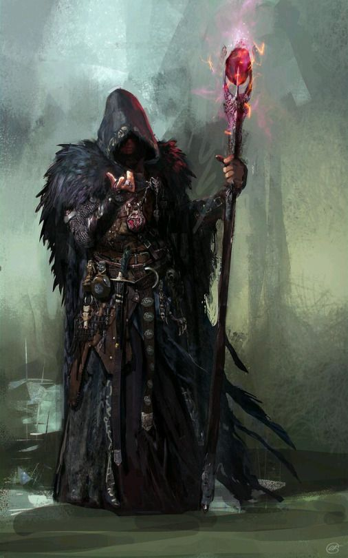

Com um pseudodragão enrolado em seu ombro, um jovem elfo vestindo robes dourados sorri calorosamente,
tecendo um charme mágico através de suas doces palavras e dobrando a sentinela do palácio como deseja.
A medida que chamas ganham vida em suas mãos, um mirrado humanos sussurra o nome secreto do seu patrono demoníaco,
infundindo sua magia com poder abissal. Olhando, ora para um tomo surrado, ora para o alinhamento
incomum das estrelas acima, um tiefling de olhos selvagens profere o ritual místico que abrirá uma passagem para um mundo distante.
Os bruxos são desbravadores do conhecimento que existe escondido no tecido do multiverso.
Através de pactos feitos com seres misteriosos detentores de poder sobrenatural,
os bruxos desbloqueiam efeitos mágicos tão sutis quanto espetaculares.
Extraindo o conhecimento antigo de seres como nobres fadas, demônios, diabos, bruxas e entidades alienígenas do Reino Distante,
os bruxos remontam segredos arcanos para aprimorar seus próprios poderes.
JURAMENTO E DÍVIDA
Um bruxo é definido por um pacto com uma entidade transcendental.
Às vezes o relacionamento entre um bruxo e seu patrono é como o de um clérigo com sua divindade,
apesar de os seres que servem como patronos para os bruxos não serem deuses.
Um bruxo poderia liderar um culto dedicado a um príncipe-demônio, um arquidemônio ou uma entidade completamente alienígena
– seres que, normalmente, não são servidos por clérigos. Muitas vezes,
porém, esse arranjo é mais similar ao realizado entre um mestre e seu aprendiz.
O bruxo aprende e aumenta seu poder, ao custo de serviços ocasionais realizados em nome do seu patrono.
A magia outorgada ao bruxo varia de pequenas, mas duradouras alterações à pessoa do bruxo
(tais como a habilidade de ver no escuro ou de ler qualquer idioma)
até o acesso a poderosas magias. Diferente dos magos livrescos, os bruxos suplementam sua magia com facilidade em combate.
Eles se sentem confortáveis em armaduras leves e sabem usar armas simples.
ESCAVANDO SEGREDOS
Os bruxos são guiados por um insaciável desejo por conhecimento e poder, que os compele aos seus pactos e molda suas vidas.
Essa sede leva os bruxos a fazerem seus pactos e também molda suas carreiras.
Histórias de bruxos criando elos com corruptores são vastamente conhecidos.
Porém, muitos bruxos servem patronos que não são abissais. Algumas vezes um viajante na floresta chega a uma estranhamente bela torre,
conhece seu senhor ou senhora feérico e acaba por fazer um pacto sem ter total ciência disso. E, as vezes, enquanto vasculha em tomos de conhecimento proibido,
a mente brilhante, porem enlouquecida de um estudante é levada a realidades além do mundo material em direção a seres alienígenas
habitantes do vazio exterior. Quando um pacto é selado, a sede de conhecimento e poder do bruxo não pode ser saciada com mero estudo e pesquisa.
Ninguém faz um pacto com uma entidade tão poderosa se não deseja usar esse poder atrás de benefícios. Em vez disso,
a grande maioria dos bruxos gastam seus dias em uma perseguição desenfreada por seus objetivos, que normalmente os leva a algum tipo de aventura.
Além disso, as demandas de seus patronos também leva os bruxos a se aventurar.
CRIANDO UM BRUXO
A medida que você cria seu personagem bruxo, gaste algum tempo pensando em seu patrono e as obrigações impostas pelo pacto que você fez.
O que levou você a fazer o pacto e, como você fez contato com seu patrono? Você foi seduzido a invocar um diabo ou você estava em busca
do ritual que permitia a você fazer contato com um antigo deus alienígena? Foi você que buscou por seu patrono ou foi seu patrono que escolheu
você? Você realiza as obrigações do seu pacto a contragosto ou serve alegremente antes mesmo de receber as recompensas prometidas a você?
Converse com seu Mestre para determinar quão influente seu pacto será na carreira de aventureiro do seu personagem.
As exigências do seu patrono devem levá-lo a aventuras ou elas devem consistir inteiramente em pequenos favores que você possa fazer entre aventuras.
Que tipo de relacionamento você tem com seu patrono? É amistoso, antagônico, apreensivo ou romântico?
O quão importante seu patrono considera que você é? Qual a sua parte nos planos do seu patrono? Você conhece outros servos do seu patrono?
Como seu patrono se comunica com você? Se você tiver um familiar, seu patrono poderia, ocasionalmente, falar através dele.
Alguns bruxos encontra mensagens de seus patronos até mesmo em arvores, misturada a folhas secas ou
vagando nas nuvens – mensagens que apenas o bruxo consegue ver.
Outros bruxos conversam com seus patrono nos sonhos, ou tem visões acordados, ou lidam apenas com intermediários.
Fonte: Vertente Geek